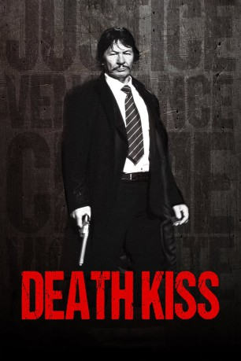

#10180 Death Kiss
 
 IMDB-Wertung: 4.5 / 10
IMDB-Wertung: 4.5 / 10  Metascore: 0
Metascore: 0 
Ein geheimnisvoller Fremder (Robert Bronzi als Doppelgänger von Charles Bronson) geht in eine von Kriminalität geprägte Stadt und nimmt dort das Recht in die eigene Hand - ein inoffizielles Sequel zu „Ein Mann sieht rot“.
Jahr: 2018
Dauer: 88 Minuten
FSK: 18
Land: USA Studio: 4Digital MediaTonspuren:
Untertitel:
Auflösung: 1080p (1920x1080) Größe: 5427 MB
Genre: Action
Regisseur: Rene Perez
Drehbuch: Rene Perez
Soundtrack: Rene Perez
Darsteller:
- Robert Bronzi als The Stranger
 Daniel Baldwin als Dan Forthright
Daniel Baldwin als Dan Forthright Richard Tyson als Tyrell
Richard Tyson als Tyrell- Eva Hamilton als Ana
- Stormi Maya als Tanya
- J.D. Angstadt als Bodyguard
- Reese Austyn als Torch
- Zach Carter als Homeless Man
- Anton Clark als Bone
- Malorie Glavan als Malorie
- Leia Perez als Isabel
- Timothy Sheard als Buzzer
- Sam Story als Billy
- Sean Story als Thrasher
- Linze Zaniroli als Little Girl
Datei: X:\FSK18-2018\Death Kiss (2018, FSK18, 1920x1080).mkv seit 16.12.2018
Festplatte: FSK18
 Es gibt insgesamt 23 Filme in der Gruppe 'FSK18-2018'
Es gibt insgesamt 23 Filme in der Gruppe 'FSK18-2018'